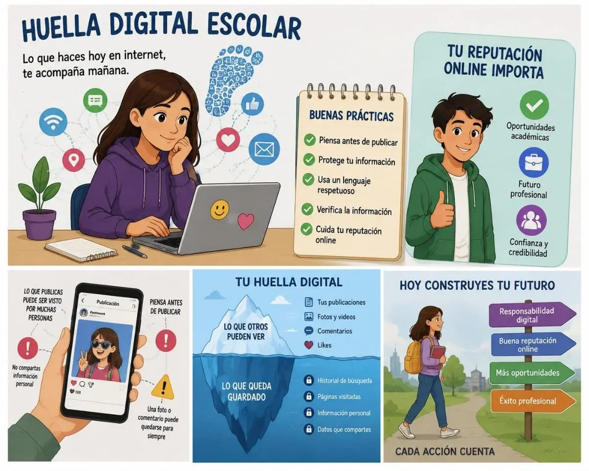
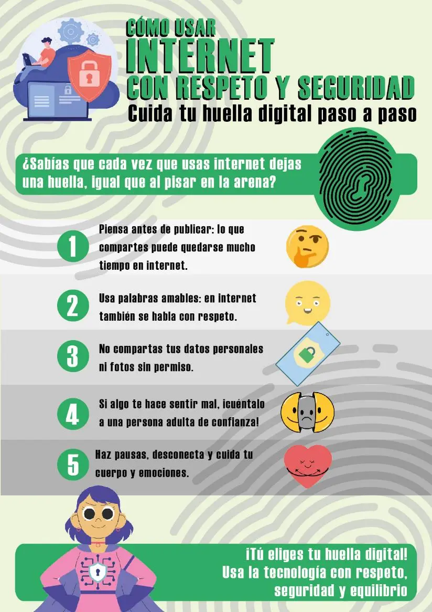

Huella digital escolar
Huella Digital Escolar: Tu Rastro en Internet y Cómo Cuidarlo
¿Qué es la huella digital?
Imagina que caminas por la playa. Cada paso que das deja una marca en la arena. En internet pasa algo muy parecido: cada vez que publicas una foto, comentas un video, creas una cuenta en un juego o incluso buscas algo en Google, dejas un rastro digital.
A diferencia de la arena, donde las olas borran tus pasos, en internet esas marcas pueden durar para siempre. Eso es tu huella digital: el conjunto de todo lo que haces, dices y compartes en línea.
¿Qué rastros dejamos exactamente?
1. En redes sociales
- Fotos y videos que subes o en los que te etiquetan
- Comentarios, "me gusta" y compartidos
- Historias o estados que publicas
- Información de tu perfil (escuela, ciudad, cumpleaños)
2. Al navegar por internet
- Tu historial de búsquedas
- Los sitios web que visitas
- Las compras que haces en línea
- Los artículos que lees
3. En juegos y aplicaciones
- Tu nombre de usuario y avatar
- Conversaciones con otros jugadores
- El tiempo que pasas en cada app
- Datos que das al registrarte
4. En el correo y mensajería
- Correos que envías y recibes
- Chats en WhatsApp, Discord, Telegram, etc.
- Archivos que compartes
5. Lo que otros publican de ti
- Fotos donde apareces sin que lo sepas
- Videos que suben tus amigos
- Comentarios que hacen sobre ti

¿Por qué importa desde la secundaria?
Quizás piensas: "Soy estudiante, no tengo nada que esconder". Y es cierto, pero el problema no es esconderse, sino construir una imagen que te represente bien cuando busques trabajo, una beca o ingreses a la universidad.
Lo que pueden encontrar de ti en el futuro:
Reclutadores y empresas: Muchas empresas revisan redes sociales antes de contratar. Una publicación ofensiva, una foto inapropiada o un comentario agresivo pueden costarte una oportunidad laboral.
Universidades: Algunas instituciones revisan perfiles de candidatos para becas o admisiones.
Compañeros y contactos profesionales: Tu reputación online influye en cómo te ven otros en tu campo de trabajo.
El dato clave: lo que publicas hoy puede aparecer años después.
Cómo gestionar tu reputación online
Paso 1: Haz una auditoría de ti mismo
- Busca tu nombre en Google, Bing y otros buscadores.
- Revisa qué aparece: ¿son fotos tuyas? ¿comentarios viejos? ¿perfiles que olvidaste?
- Si encuentras algo que no te gusta, intenta eliminarlo o pide a quien lo publicó que lo borre.
Paso 2: Configura la privacidad
- Revisa la configuración de privacidad de todas tus redes sociales.
- Limita quién puede ver tus publicaciones (mejor "amigos" que "público").
- Desactiva la etiquetación automática en fotos.
- No aceptes solicitudes de desconocidos.
Paso 3: Piensa antes de publicar
- Usa la regla del "abuelo test": si no le mostrarías esa publicación a tu abuelo, mejor no la subas.
- ¿Es ofensiva para alguien?
- ¿Podría malinterpretarse en el futuro?
- ¿Comparte demasiada información personal?
Paso 4: Construye una huella positiva
- No se trata solo de borrar lo malo, sino de crear contenido bueno:
- Participa en proyectos escolares que tengan presencia online.
- Crea un perfil de LinkedIn cuando estés cerca de terminar la secundaria.
- Comparte tus logros, hobbies o intereses de manera positiva.
- Escribe en blogs o participa en foros de temas que te apasionen.
Paso 5: Limpia regularmente
- Borra cuentas de apps o juegos que ya no uses.
- Elimina publicaciones viejas que no representen quién eres ahora.
- Revisa tus "me gusta" y compartidos; a veces damos "like" a cosas sin pensar.
Paso 6: Protege tus datos
- Usa contraseñas fuertes y diferentes para cada cuenta.
- No compartas tu dirección, teléfono o escuela con desconocidos.
- Ten cuidado con los enlaces sospechosos o las encuestas que piden muchos datos personales.

Tu huella digital es como un currículum invisible que viaja contigo. Desde la secundaria, tienes la oportunidad de decidir qué tipo de rastro quieres dejar. No se trata de dejar de divertirte en internet, sino de usarlo con inteligencia y responsabilidad.
Las decisiones que tomas hoy en línea pueden abrirte puertas mañana... o cerrártelas. Tú eliges qué huella dejar.